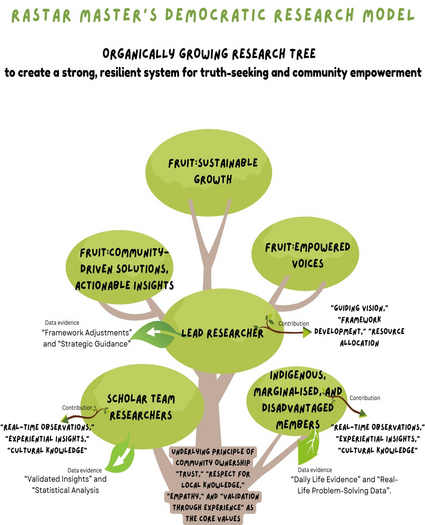

<!---------details banner section------->
<section class="details-section">

  <div class="container">
    <div class="details-title text-center wow fadeInUp" data-wow-duration="1s">
      <h2 class="text-center">Research Model Contrast</h2>
    </div>
    <div class="details-desc wow fadeInUp" data-wow-duration="1s">
      <p>Authoritative traditional research typically follows a hierarchical structure, where a lead researcher or
        primary investigator sets the agenda, methodology, and outcomes of a study. In this model, research participants
        or junior members often have limited input, mainly contributing data or supporting tasks without actively
        shaping the research direction. This top-down approach, while structured and controlled, can sometimes distance
        the findings from the lived realities of those it studies, as it prioritizes academic expertise over firsthand
        knowledge from the community or participants.In an authoritative research model, the hierarchy is typically
        structured into three main categories with distinct roles and levels of involvement:Lead Researcher (Maximum
        Authority): The lead researcher holds the highest authority and control within the research hierarchy.</p>
      <div class="details-image pt-3">
        
      </div>
      <p>This individual is responsible for designing the research questions, selecting the methodology, setting
      objectives,
      and overseeing the entire research process. Their perspective and expertise shape the study’s direction, leaving
      little room for input from others. The lead researcher dictates decisions and interprets findings, with the
      outcomes reflecting their theoretical framework and priorities.Junior Researchers (Limited Authority): Junior
      researchers or research assistants play supportive roles, primarily assisting in data collection, analysis, and
      documentation. Their responsibilities are limited to specific tasks as directed by the lead researcher, without
      significant input into the research design or interpretation of results. They are expected to follow established
      protocols and contribute within predefined boundaries, often without influence on the broader research
      objectives or methodology.Community or Indigenous Members (No Involvement): In authoritative, theory-driven
      research, community members or indigenous groups may be viewed only as subjects of study rather than active
      contributors. They have little to no involvement in shaping research questions, methods, or outcomes, and their
      lived experiences are often secondary to theoretical frameworks. While data may be drawn from this community,
      their insights and perspectives typically don’t inform the research direction, limiting the study’s connection
      to real-life contexts and missing valuable, culturally-rooted insights.</p>
      <div class="details-image pt-3">
        
      </div>
      <p>This structure, with rigid authority and
      minimal community engagement, often yields findings that are academically sound yet may lack direct relevance or
      resonance with the communities studied.In contrast, democratic research shifts this paradigm, embracing a
      collaborative and inclusive approach that values diverse voices. It operates on the principle that research is
      most effective when it includes contributions from a wide array of participants, such as scholars, community
      members, and even children or elders with lived experience. This model sees participants as co-researchers,
      actively involved in all stages, from setting objectives to interpreting findings. In a democratic research
      model, insights from daily life, cultural practices, and experiential wisdom are viewed as valuable data,
      creating findings that are not only academically robust but also deeply relevant to the community. This contrast
      highlights the power of democratic research to produce results that are immediately actionable and grounded in
      real-life contexts, fostering a sense of shared ownership and ensuring that the knowledge produced is meaningful
      and applicable to those involved.</p>
    </div>
  </div>
</section>
